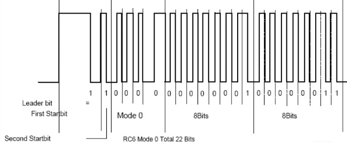

IR¶
Infrared remote control configuration¶
The configuration steps can be divided into two parts:
modify the kernel driver: kernel space changes, Linux and Android will modify this part of the content.
modify key-value mapping: user-space changes (Android system only).
Kernel driver¶
In the Linux kernel, the IR driver only supports NEC encoding format. Here’s how to configure the infrared remote control in the kernel.
The documents involved:
drivers/input/remotectl/rockchip_pwm_remotectl.c
How to get user code and IR key¶
Get the user code and key values from remotectl_do_something:
case RMC_USERCODE:
{
//ddata->scanData <<= 1;
//ddata->count ++;
if ((RK_PWM_TIME_BIT1_MIN < ddata->period) && (ddata->period < RK_PWM_TIME_BIT1_MAX)){
ddata->scanData |= (0x01<<ddata->count);
}
ddata->count ++;
if (ddata->count == 0x10){//16 bit user code
DBG_CODE("GET USERCODE=0x%x\n",((ddata->scanData) & 0xffff));
if (remotectl_keybdNum_lookup(ddata)){
ddata->state = RMC_GETDATA;
ddata->scanData = 0;
ddata->count = 0;
}else{ //user code error
ddata->state = RMC_PRELOAD;
}
}
}
Note : users can print the user code using the DBG_CODE() function.
DBG_CODE printing can be enabled by using the following command:
echo 1 > /sys/module/rockchip_pwm_remotectl/parameters/code_print
Compile IR driver into kernel¶
The steps to compile IR driver into the kernel are as follows:
(1). add the following configuration to the configuration file drivers/input/remotectl/Kconfig:
config RK_REMOTECTL_PWM
bool "rkxx remoctrl pwm0 capture"
default n
(2). modify the Makefile under drivers/input/remotectl and add the following compilation options:
obj-$(RK_REMOTECTL_PWM) += rk_pwm_remotectl.o
(3). make menuconfig is used in kernel path to select IR driver as follows:
Device Drivers
--->Input device support
-----> [*] rkxx remotectl
------->[*] rkxx remoctrl pwm0 capture.
After saving, execute the make command to weave the driver into the kernel.
Android key-value mapping¶
File /system/usr/keylayout/ff420030_pwm.kl is used to map the Linux layer to get the key value to Android on the corresponding key values. Users can add or modify the contents of the file to implement different key-value mappings.
The contents of the file are as follows:
key 28 ENTER
key 116 POWER WAKE
key 158 BACK
key 139 MENU
key 217 SEARCH
key 232 DPAD_CENTER
key 108 DPAD_DOWN
key 103 DPAD_UP
key 102 HOME
key 105 DPAD_LEFT
key 106 DPAD_RIGHT
key 115 VOLUME_UP
key 114 VOLUME_DOWN
key 143 NOTIFICATION WAKE
key 113 VOLUME_MUTE
key 388 TV_KEYMOUSE_MODE_SWITCH
key 400 TV_MEDIA_MULT_BACKWARD
key 401 TV_MEDIA_MULT_FORWARD
key 402 TV_MEDIA_PLAY_PAUSE
key 64 TV_MEDIA_PLAY
key 65 TV_MEDIA_PAUSE
key 66 TV_MEDIA_STOP
Note : files modified through ADB take effect after restart.
IR use¶
The diagram below, it is through the waveform generated by the infrared remote Control button, mainly consists of four parts: head, Control, information, signed free, specific can consult RC6 Protocol.
